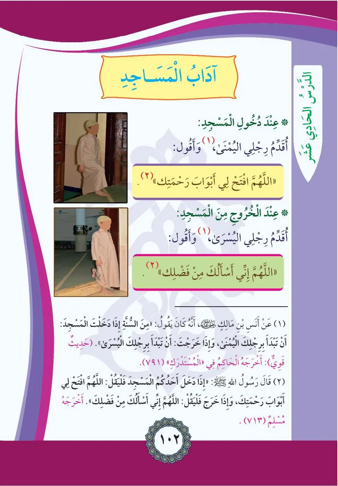
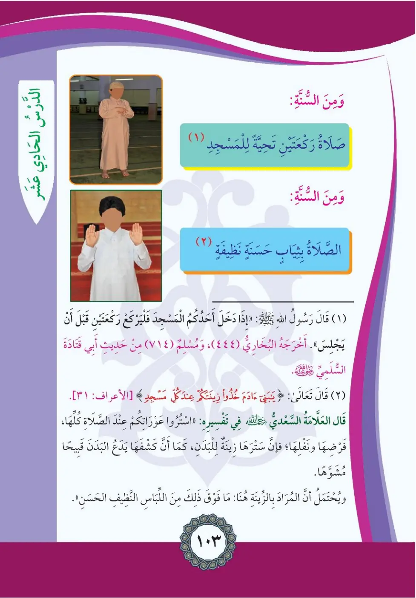
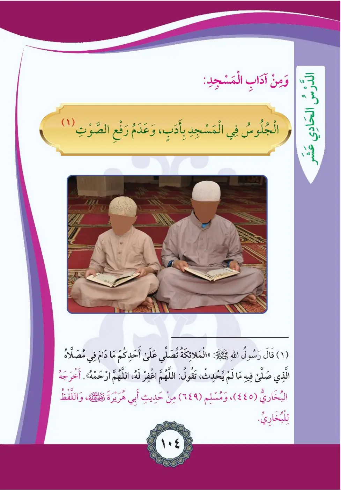

Stage 2·المرحلة الثانية⭐ Unit 1
آدَابُ المَسَاجِدِ Manners of the Mosques
From the Textbookpp. 103–105



عِنْدَ دُخُولِ الْمَسْجِدِ: أُقَدِّمُ رِجْلِيَ الْيُمْنَى وَأَقُولُ: «اللَّهُمَّ افْتَحْ لِي أَبْوَابَ رَحْمَتِكَ». عِنْدَ الْخُرُوجِ مِنَ الْمَسْجِدِ: أُقَدِّمُ رِجْلِيَ الْيُسْرَى، وَأَقُولُ: «اللَّهُمَّ إِنِّي أَسْأَلُكَ مِنْ فَضْلِكَ».
'Ind dukhul al-masjid: uqaddimu rijli al-yumna wa-aqulu: Allahuma iftah li abwaba rahmatik.
Upon entering the mosque:
I step in with my right foot and say: "O Allah, open for me the gates of Your mercy."
Upon leaving the mosque:
I step out with my left foot and say: "O Allah, I ask You from Your bounty."
பள்ளிவாசலுக்குள் வலக்கால் நுழைந்து "அல்லாஹ்வே! உன் கருணையின் வாசல்களை எனக்குத் திறந்தருள்" என துஆ செய்வேன்; வெளியேறும்போது இடக்கால் முதலில் வெளியேறி "உன் அருட்கருவை நான் வேண்டுகிறேன்" என கூறுவேன்.
(١) عَنْ مَالِكِ بْنِ صَعْصَعَةَ أَنَّهُ كَانَ يَقُولُ أَنَّهُ سُنَّةٌ إِذَا دَخَلْتَ الْمَسْجِدَ أَنْ تَبْدَأَ بِرِجْلِكَ الْيُمْنَى، وَإِذَا خَرَجْتَ أَنْ تَبْدَأَ بِرِجْلِكَ الْيُسْرَى (حَدِيثٌ قَوِيٌّ) أَخْرَجَهُ الْحَاكِمُ فِي الْمُسْتَدْرَكِ (٧٩١)
'An malikin bni sa'sa'ata annahu kana yaqulu annahu sunna idha dukhilta al-masjid.
From Malik ibn Sa'sa'ah, who said it is sunnah when entering the mosque to begin with the right foot, and when leaving to begin with the left foot. (Strong narration; al-Hakim in al-Mustadrak 791)
பள்ளிவாசலில் நுழையும்போது வலக்காலிலும், வெளியேறும்போது இடக்காலிலும் நுழைவது சுன்னத் (ஹாகிம் 791)
(٢) وَقَالَ رَسُولُ اللَّهِ صلى الله عليه وسلم: «إِذَا دَخَلَ أَحَدُكُمُ الْمَسْجِدَ فَلْيَقُلْ: اللَّهُمَّ افْتَحْ لِي أَبْوَابَ رَحْمَتِكَ، وَإِذَا خَرَجَ فَلْيَقُلْ: اللَّهُمَّ إِنِّي أَسْأَلُكَ مِنْ فَضْلِكَ». أَخْرَجَهُ مُسْلِمٌ (٧١٣)
Idha dakhala ahadukum al-masjida fa-l-yaqul: Allahuma iftah li abwaba rahmatik.
The Messenger of Allah said: "When one of you enters the mosque let him say: O Allah, open for me the gates of Your mercy; and when he leaves let him say: O Allah, I ask You from Your bounty." (Muslim 713)
"பள்ளிவாசலில் நுழைந்தால்... வெளியேறினால்..." என நபி (ஸல்) கற்பித்தார்கள் (முஸ்லிம் 713)
مِنَ السُّنَّةِ: صَلَاةُ تَحِيَّةِ الْمَسْجِدِ رَكْعَتَانِ. وَقَالَ رَسُولُ اللَّهِ صلى الله عليه وسلم: «إِذَا دَخَلَ أَحَدُكُمُ الْمَسْجِدَ فَلَا يَجْلِسْ حَتَّى يَرْكَعَ رَكْعَتَيْنِ». أَخْرَجَهُ الْبُخَارِيُّ (٤٤٤)، وَمُسْلِمٌ (٧١٤)، مِنْ حَدِيثِ أَبِي قَتَادَةَ السُّلَمِيِّ
Min as-sunna: salatu tahiyyati al-masji rak'atan.
From the sunnah: the two rak'ahs of greeting the mosque. The Messenger of Allah said: "When one of you enters the mosque, let him not sit until he prays two rak'ahs." (Bukhari 444, Muslim 714, from Abu Qatada al-Sulami)
பள்ளிவாசலில் நுழைந்தவுடன் அமரும் முன் இரு ரக்அத் தொழுவது சுன்னத் (புகாரி 444, முஸ்லிம் 714)
مِنَ السُّنَّةِ: الصَّلَاةُ بِثِيَابٍ حَسَنَةٍ نَظِيفَةٍ. وَقَالَ تَعَالَى: «يَا بَنِي آدَمَ خُذُوا زِينَتَكُمْ عِندَ كُلِّ مَسْجِدٍ» [الْأَعْرَافُ: ٣١]. قَالَ الْعَلَّامَةُ السَّعْدِيُّ فِي تَفْسِيرِهِ: اسْتُرُوا عَوْرَاتِكُمْ عِنْدَ الصَّلَاةِ كُلِّهَا؛ فَرْضِهَا وَنَفَلِهَا؛ فَإِنَّ سَتْرَهَا زِينَةٌ لِلْبَدَنِ، كَمَا أَنَّ كَشْفَهَا يَدْعُو إِلَى كَشْفِ الْبَدَنِ الْقَبِيحِ الْمُشَوَّهِ. وَيُحْتَمَلُ الْمُرَادُ بِالزِّينَةِ هُنَا: مَا فَوْقَ ذَلِكَ مِنَ اللِّبَاسِ النَّظِيفِ الْحَسَنِ.
Min as-sunna: as-salatu bi-thiyabin hasanatin nazifa.
From the sunnah: praying in good clean clothes. Allah says: "O children of Adam, take your adornment at every mosque" (Al-A'raf 31). Al-Sa'di said in his tafsir: cover your private parts at every prayer, obligatory and supererogatory, for covering them is adornment for the body; and the adornment here may also mean what is above that of clean fine clothing.
தொழுகைக்கு சுத்தமான நல்ல ஆடைகளை அணிவது சுன்னத்; "ஆதம் சந்ததியினரே! எல்லா தொழுகைகளிலும் உங்கள் அலங்காரத்தை எடுத்துக் கொள்ளுங்கள்" (அஃஅராஃப் 31)
وَمِنْ آدَابِ الْمَسْجِدِ: الْجُلُوسُ فِيهِ بِأَدَبٍ، وَعَدَمُ رَفْعِ الصَّوْتِ. فَقَالَ رَسُولُ اللَّهِ صلى الله عليه وسلم: «تُصَلِّي عَلَيْكَ الْمَلَائِكَةُ مَا دَامَ أَحَدُكُمْ فِي مُصَلَّاهُ الَّذِي صَلَّى فِيهِ؛ مَا لَمْ يُحْدِثْ، تَقُولُ: اللَّهُمَّ اغْفِرْ لَهُ، اللَّهُمَّ ارْحَمْهُ». وَاللَّفْظُ لِلْبُخَارِيِّ، أَخْرَجَهُ الْبُخَارِيُّ (٤٥٨)، وَمُسْلِمٌ (٦٤٩)، مِنْ حَدِيثِ أَبِي هُرَيْرَةَ
Wa-min adabi al-masjid: al-julusu fih bi-adab, wa-'adam raf'i as-sawt.
Among mosque manners: sitting in it politely and not raising the voice. The Messenger of Allah said: "The angels keep sending blessings upon you so long as you remain in your place of prayer where you prayed, so long as you do not break wudu, saying: O Allah forgive him, O Allah have mercy on him." (Bukhari 458, Muslim 649)
பள்ளிவாசலில் நாகரிகமாக அமர்வதும் குரலை உயர்த்தாமல் இருப்பதும் அதப் (புகாரி 458, முஸ்லிம் 649)